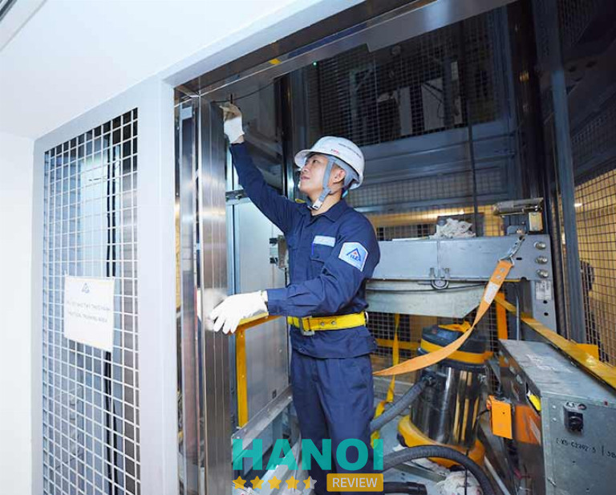
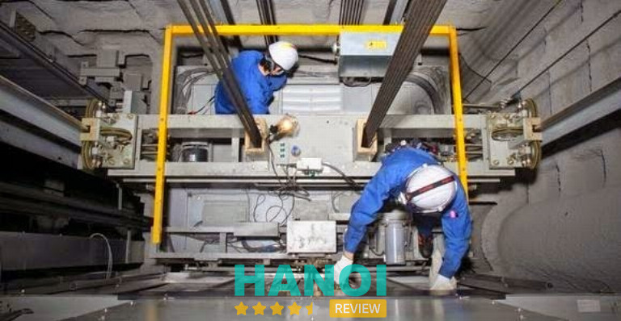
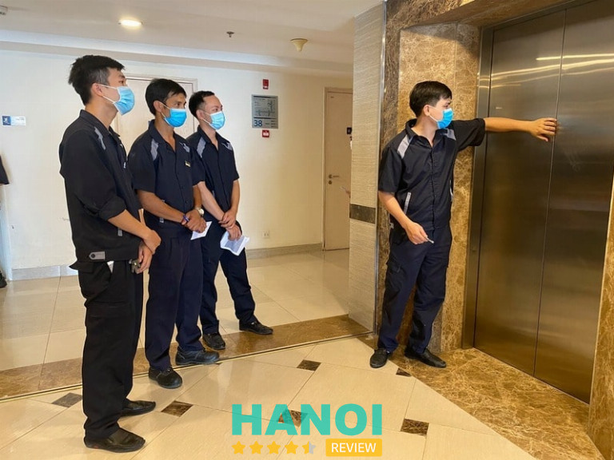
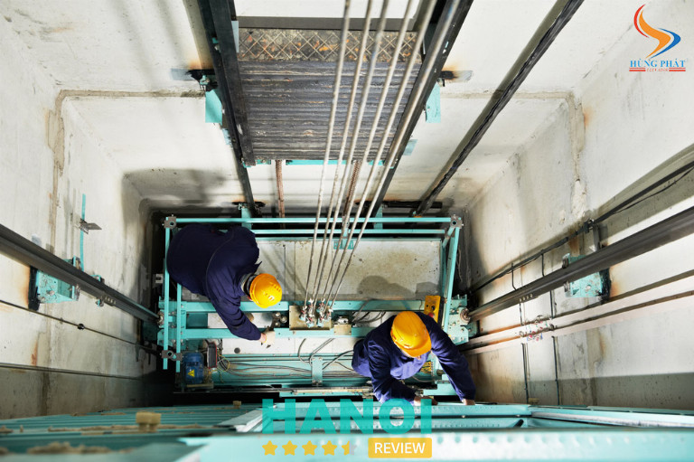
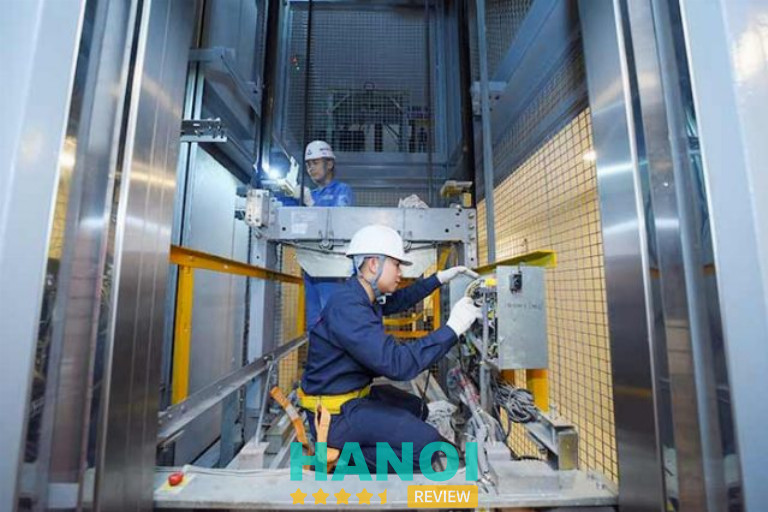
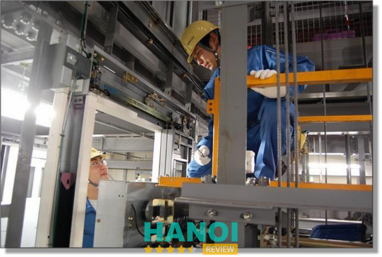
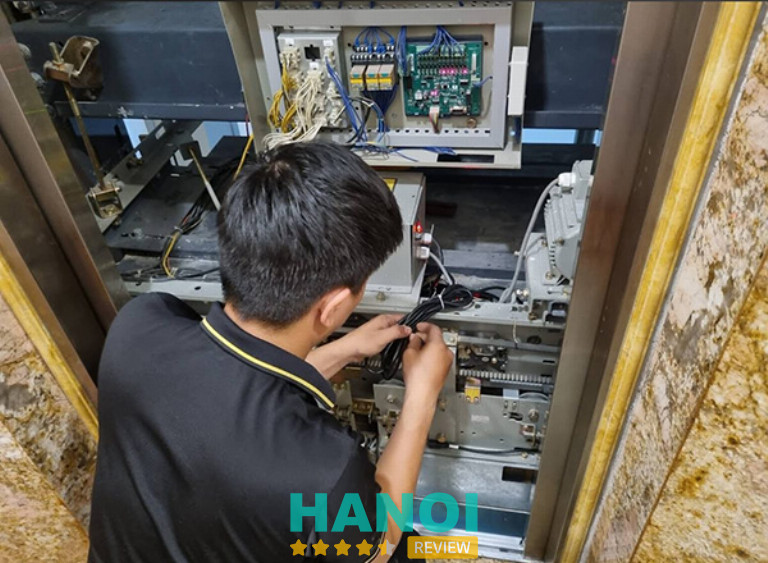
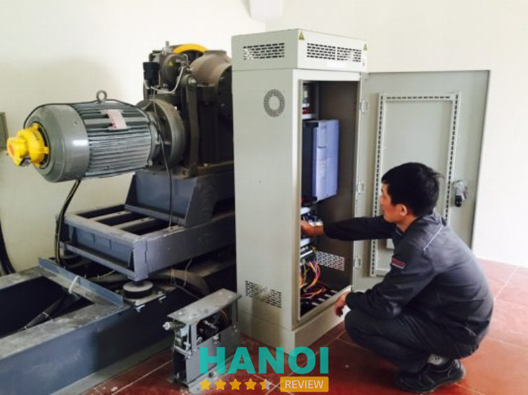

10 Dịch vụ sửa chữa, bảo trì thang máy tại Hà Nội nhanh chóng, chất lượng
Dịch vụ sửa chữa, bảo trì thang máy tại Hà Nội ngày càng trở nên quan trọng đối với các tòa nhà cao tầng, chung cư hay các doanh nghiệp lớn. Khi thang máy gặp sự cố, việc lựa chọn một dịch vụ uy tín, có kinh nghiệm và đội ngũ kỹ thuật viên tay nghề cao sẽ giúp đảm bảo thang máy hoạt động an toàn, hiệu quả.
Top 10 Dịch vụ sửa chữa, bảo trì thang máy ở Hà Nội nhanh chóng
Khi thang máy gặp sự cố hoặc cần bảo trì, việc tìm kiếm một dịch vụ sửa chữa uy tín và chất lượng là điều vô cùng quan trọng. Đặc biệt tại Hà Nội, nơi có nhiều công ty cung cấp dịch vụ sửa chữa thang máy, việc lựa chọn được một địa chỉ đáng tin cậy, có kinh nghiệm và chuyên môn cao là yếu tố quyết định sự ổn định và an toàn trong suốt quá trình sử dụng thang máy.
Vậy làm thế nào để chọn được dịch vụ sửa chữa và bảo trì thang máy phù hợp? Dưới đây là 10 địa chỉ bạn có thể tham khảo.
Công ty cổ phần thang máy Trường Thành
Công ty Cổ phần Thang máy Trường Thành là một đơn vị uy tín tại Hà Nội, chuyên cung cấp các dịch vụ sửa chữa, bảo trì, và lắp đặt thang máy cho các hệ thống thang máy đa dạng. Được thành lập với đội ngũ kỹ sư, kỹ thuật viên giàu kinh nghiệm, Trường Thành luôn cam kết mang đến dịch vụ chất lượng và sự hài lòng cho khách hàng.
Với đội ngũ kỹ thuật viên được đào tạo bài bản và chuyên sâu, công ty cung cấp các giải pháp sửa chữa nhanh chóng và hiệu quả cho các dòng thang máy nổi tiếng như TOSHIBA, FUJI, OTIS, MITSUBISHI, và nhiều thương hiệu khác.

Một trong những điểm nổi bật của Trường Thành là khả năng bảo trì và nâng cấp các hệ thống thang máy. Công ty luôn chú trọng đến việc bảo dưỡng định kỳ để thang máy hoạt động ổn định, giảm thiểu sự cố và đảm bảo an toàn tuyệt đối cho người sử dụng. Các dịch vụ này giúp kéo dài tuổi thọ của thiết bị.
Trường Thành cam kết thực hiện công việc đúng tiến độ và bảo đảm chất lượng. Đội ngũ kỹ sư sẽ đến tận nơi kiểm tra và thực hiện sửa chữa ngay khi có yêu cầu, không để khách hàng phải lo lắng về thời gian chờ đợi. Công ty luôn sẵn sàng phục vụ khách hàng 24/24 giờ, đáp ứng mọi tình huống khẩn cấp.
Bên cạnh việc sửa chữa, Trường Thành còn cung cấp dịch vụ hiệu chỉnh và lắp đặt thang máy mới. Được biết đến với chất lượng thi công cao, công ty bảo đảm các thang máy được lắp đặt và hiệu chỉnh theo tiêu chuẩn an toàn quốc tế, mang lại sự vận hành êm ái, bền bỉ.
Thông tin liên hệ:
- Địa chỉ: Số 47 ngõ 193 Phố Phúc Tân, P. Phúc Tân, Q. Hoàn Kiếm, Hà Nội
- Điện thoại: 024 6269 3869
- Email: contact@thangmaytruongthanh.com
- Website: thangmaytruongthanh.com
- Fanpage: FB.com/truongthanhelevator
Xem thêm: 10 Đơn vị cung cấp nội thất văn phòng tại Hà Nội uy tín, giá tốt
Công ty thang máy Taiyo Việt Nam
Công ty Thang máy Taiyo Việt Nam là một đơn vị uy tín trong lĩnh vực sản xuất, lắp đặt, sửa chữa và bảo trì thang máy tại Hà Nội. Với nhiều năm kinh nghiệm, Taiyo đã xây dựng được lòng tin vững chắc từ phía khách hàng nhờ vào chất lượng dịch vụ và sự chuyên nghiệp trong từng công trình.
Taiyo cung cấp các dịch vụ đa dạng từ sản xuất, lắp đặt thang máy đến bảo trì, sửa chữa và cung cấp linh kiện chính hãng. Các dịch vụ này đều được thực hiện với cam kết cao về chất lượng và tiến độ, nhằm mang lại sự hài lòng tối đa cho khách hàng.
Điểm mạnh của Taiyo là khả năng tư vấn thiết kế miễn phí, giúp khách hàng lựa chọn được giải pháp thang máy phù hợp với yêu cầu sử dụng và không gian lắp đặt. Đội ngũ kỹ thuật viên của Taiyo luôn sẵn sàng hỗ trợ khách hàng từ giai đoạn đầu đến khi hoàn thiện công trình.

Để thang máy hoạt động hiệu quả và bền lâu, Taiyo đặc biệt chú trọng đến công tác bảo trì và bảo dưỡng định kỳ. Các dịch vụ này giúp phát hiện và khắc phục kịp thời các sự cố, tránh tình trạng thang máy bị hỏng hóc hoặc gặp phải vấn đề an toàn.
Taiyo cam kết mang lại sự bảo đảm tuyệt đối cho mọi công việc, từ sửa chữa đơn giản đến nâng cấp hệ thống thang máy. Công ty luôn đặt uy tín và trách nhiệm lên hàng đầu, giúp khách hàng yên tâm về chất lượng và sự an toàn của thiết bị.
Với sự nỗ lực không ngừng trong việc cải tiến và đổi mới, Taiyo đã khẳng định được vị thế của mình trên thị trường thang máy tại Hà Nội. Dịch vụ hậu mãi chu đáo và chất lượng luôn là yếu tố quan trọng giúp công ty duy trì được lòng tin của khách hàng.
Thông tin liên hệ:
- Địa chỉ: Tầng 3-4 số 71 hố Trần Đại Nghĩa, P. Bách Khoa, Q. Hai Bà Trưng, Hà Nội
- Điện thoại: 024 3623 0847
- Email: thangmaytaiyo@gmail.com
- Wedsite: thangmaytaiyo.vn
- Fanpage: FB.com/taiyoelevator
VISAHO
VISAHO là một trong những công ty hàng đầu trong lĩnh vực lắp đặt, sửa chữa và bảo trì thang máy tại Hà Nội. Công ty đã không ngừng nỗ lực mang đến dịch vụ chất lượng cao, đáp ứng nhu cầu ngày càng cao của khách hàng.
Một trong những yếu tố giúp VISAHO nổi bật là đội ngũ kỹ sư và nhân viên giàu kinh nghiệm. Được đào tạo bài bản và có tay nghề vững, đội ngũ kỹ thuật viên của công ty có khả năng phát hiện và xử lý nhanh chóng mọi sự cố thang máy, từ các lỗi nhỏ đến những vấn đề phức tạp.

Quy trình làm việc của VISAHO luôn được tổ chức khoa học và chuyên nghiệp. Ngay sau khi tiếp nhận yêu cầu, công ty sẽ nhanh chóng điều phối nhân viên đến tận nơi để kiểm tra và sửa chữa thang máy. Khách hàng sẽ được thông báo trước về giá cả và các chính sách bảo hành, đảm bảo sự minh bạch và rõ ràng trong quá trình sử dụng dịch vụ.
Các dịch vụ sửa chữa và bảo trì của VISAHO luôn tuân thủ nghiêm ngặt các tiêu chuẩn quốc tế, đặc biệt là tiêu chuẩn Nhật Bản. Điều này không chỉ đảm bảo chất lượng mà còn tạo nên sự an tâm cho khách hàng khi sử dụng dịch vụ. Công ty cam kết mang đến giải pháp tối ưu cho mọi vấn đề liên quan đến thang máy.
VISAHO xứng đáng là một trong những sự lựa chọn hàng đầu cho dịch vụ sửa chữa, bảo trì thang máy tại Hà Nội. Dù chi phí có phần cao hơn so với các công ty khác, nhưng mức độ uy tín và chất lượng mà VISAHO mang lại là điều không thể phủ nhận.
Thông tin liên hệ:
- Địa chỉ: Tầng 12A, Tòa Viglacera Tower, 1 Đại lộ Thăng Long, P. Mễ Trì, Q. Nam Từ Liêm, Hà Nội
- Điện thoại: 024 3221 6336
- Email: info@visaho.vn
- Website: visaho.vn
- Fanpage: FB.com/VisahoVietnam
Xem thêm: 10 Công ty thiết kế nội thất văn phòng tại Hà Nội chất lượng nhất
Thang Máy Gia Đình Hùng Phát
Thang Máy Gia Đình Hùng Phát tại Hà Nội nổi tiếng với dịch vụ sửa chữa và bảo trì thang máy chuyên nghiệp, đáp ứng mọi yêu cầu của khách hàng. Công ty không chỉ cung cấp dịch vụ lắp đặt thang máy mà còn chú trọng đến việc bảo trì, bảo dưỡng định kỳ, giúp hệ thống thang máy vận hành ổn định, an toàn.
Kỹ thuật viên của Thang Máy Gia Đình Hùng Phát có trình độ chuyên môn cao, được đào tạo bài bản và luôn sẵn sàng xử lý mọi vấn đề phát sinh. Khi nhận sửa chữa, đội ngũ nhân viên sẽ kiểm tra toàn diện các bộ phận thang máy như cabin, hố PIT, phòng máy, các nút bấm và hệ thống điều khiển để đảm bảo hoạt động trơn tru, không gặp sự cố.

Ngoài các công tác bảo trì, Thang Máy Gia Đình Hùng Phát còn nhận sửa chữa các lỗi thường gặp ở thang máy như kẹt cửa, đèn chiếu sáng không hoạt động, thang rung lắc hoặc dừng không đúng tầng. Công ty cam kết thực hiện nhanh chóng, hiệu quả, giảm thiểu thời gian gián đoạn trong quá trình sử dụng.
Khi cần thay thế linh kiện, Thang Máy Gia Đình Hùng Phát sẽ tư vấn rõ ràng về chi phí và lựa chọn linh kiện thay thế chất lượng. Công ty luôn đảm bảo giá cả hợp lý, công khai minh bạch và đưa ra các chính sách bảo hành đầy đủ để khách hàng an tâm sử dụng dịch vụ lâu dài.
Với thái độ làm việc chuyên nghiệp, Thang Máy Gia Đình Hùng Phát luôn đáp ứng đúng giờ, thao tác nhanh gọn, tỉ mỉ. Đội ngũ nhân viên không chỉ có tay nghề cao mà còn rất tận tâm, chăm sóc khách hàng chu đáo, mang đến sự hài lòng tuyệt đối trong mọi dịch vụ sửa chữa và bảo trì thang máy.
Thông tin liên hệ:
- Địa chỉ: P2604 Tháp A3, Tòa nhà Ecolife Capitol, 58 Tố Hữu, P. Trung Văn, Q. Nam Từ Liêm, Hà Nội
- Điện thoại: 0949 788 666
- Email: thangmayhungphat@gmail.com
- Website: thangmayhungphat.com
- Fanpage: FB.com/thangmaygiadinhhp
Công ty TNHH Cơ điện Xây dựng
Công ty TNHH Cơ điện Xây dựng (MECO) là một trong những đơn vị tiên phong trong lĩnh vực cung cấp, lắp đặt và bảo trì thang máy tại miền Bắc Việt Nam. Sau hơn 20 năm hoạt động, MECO đã trở thành đối tác tin cậy của nhiều khách hàng lớn, đảm bảo an toàn và chất lượng cho các công trình trên toàn quốc.
MECO luôn cam kết mang đến những sản phẩm thang máy chất lượng cao với tính năng kỹ thuật ưu việt. Công ty cung cấp các thiết bị thang máy đồng bộ, an toàn, tin cậy và bền bỉ, giúp duy trì hoạt động ổn định trong suốt thời gian sử dụng. Dịch vụ bảo trì định kỳ là yếu tố then chốt giúp kéo dài tuổi thọ của các thiết bị thang máy.

Bằng việc sở hữu đội ngũ kỹ thuật viên giàu kinh nghiệm, công ty đảm bảo quá trình lắp đặt và bảo trì thang máy diễn ra nhanh chóng và hiệu quả. Các kỹ thuật viên của MECO luôn nắm bắt chính xác yêu cầu của khách hàng và thực hiện công việc một cách chuyên nghiệp, tránh gây phiền toái cho khách hàng.
MECO luôn đảm bảo quyền lợi của khách hàng được đặt lên hàng đầu. Mọi yêu cầu của khách hàng sẽ được giải quyết nhanh chóng, giúp khách hàng an tâm hơn khi sử dụng dịch vụ sửa chữa và bảo trì thang máy. Công ty cam kết đáp ứng mọi nhu cầu sửa chữa và bảo trì trong thời gian ngắn nhất.
Với đội ngũ nhân viên chuyên nghiệp và phong cách phục vụ nhanh chóng, MECO là sự lựa chọn lý tưởng cho các dịch vụ sửa chữa và bảo trì thang máy tại Hà Nội.
Thông tin liên hệ:
- Địa chỉ: 102 Trường Chinh, P. Phương Mai, Q. Đống Đa, Hà Nội
- Điện thoại: 024 3863 4360
- Email: vanphong@mecojsc.vn
- Website: mecojsc.vn
Xem thêm: 4 Công ty thiết kế thi công tủ bếp tại H. Gia Lâm uy tín, chất lượng
Công ty Cổ Phần Công Nghệ Thang Máy Phương Đông
Công ty Thang Máy Phương Đông là địa chỉ uy tín với dịch vụ sửa chữa và bảo trì thang máy chất lượng cao tại Hà Nội. Với nhiều năm kinh nghiệm trong ngành, công ty đã khẳng định được vị thế và uy tín, mang đến những giải pháp tối ưu cho hệ thống thang máy, từ lắp đặt đến bảo trì định kỳ.
Đội ngũ kỹ thuật viên được đào tạo chuyên sâu, Thang Máy Phương Đông cam kết mang lại dịch vụ sửa chữa thang máy nhanh chóng và hiệu quả. Mọi sự cố sẽ được xử lý kịp thời, từ những vấn đề nhỏ như kẹt cửa, đến các lỗi phức tạp liên quan đến hệ thống điều khiển và động cơ.
Thang Máy Phương Đông không chỉ nổi bật ở khả năng sửa chữa mà còn ở dịch vụ bảo trì định kỳ. Công ty thực hiện kiểm tra toàn diện hệ thống thang máy để phát hiện các vấn đề tiềm ẩn, giúp khách hàng tiết kiệm chi phí sửa chữa và đảm bảo thang máy vận hành ổn định trong thời gian dài.

Công ty luôn dự phòng sẵn các phụ tùng thay thế chính hãng, đồng bộ cho nhiều nhãn hiệu thang máy khác nhau. Điều này giúp công tác sửa chữa và bảo trì diễn ra nhanh chóng, không làm gián đoạn quá trình sử dụng của khách hàng, đồng thời đảm bảo chất lượng công việc.
Lý do nhiều khách hàng lựa chọn Thang Máy Phương Đông là nhờ vào sự cam kết về chất lượng sản phẩm và dịch vụ. Công ty luôn cung cấp các sản phẩm đạt tiêu chuẩn an toàn, chất lượng cao, với chi phí hợp lý. Mỗi dự án đều được thực hiện đúng tiến độ, đảm bảo hiệu quả tối ưu cho khách hàng.
Thang Máy Phương Đông cũng chú trọng vào việc nâng cao năng lực đội ngũ nhân viên thông qua các chương trình đào tạo, nhằm đáp ứng yêu cầu ngày càng cao trong ngành thang máy. Đội ngũ kỹ thuật viên luôn tuân thủ quy trình làm việc chuyên nghiệp, giúp khách hàng hoàn toàn yên tâm về chất lượng dịch vụ.
Thông tin liên hệ:
- Địa chỉ: 10 Ngõ 285 Khuất Duy Tiến, P. Trung Hoà, Q. Cầu Giấy, Hà Nội
- Điện thoại: 028 3620 0715
- Email: info@thangmayphuongdong.com.vn
- Website: thangmayphuongdong.com.vn
Công ty cổ phần thang máy IMS Việt Nam
Công ty cổ phần thang máy IMS Việt Nam là một địa chỉ uy tín và chuyên nghiệp trong lĩnh vực cung cấp và sửa chữa thang máy tại Hà Nội. Với hơn 10 năm kinh nghiệm, công ty luôn mang đến những giải pháp an toàn và hiệu quả cho các công trình thang máy.
IMS Việt Nam nổi bật với đội ngũ kỹ thuật viên được đào tạo chuyên sâu từ các hãng thang máy uy tín. Nhờ vào sự am hiểu và kỹ năng nghề nghiệp vững vàng, công ty có thể thực hiện sửa chữa và bảo trì thang máy một cách nhanh chóng, tiết kiệm thời gian cho khách hàng.

Công ty áp dụng quy trình bảo trì chuyên nghiệp, giúp hệ thống thang máy luôn hoạt động ổn định. Các dịch vụ bảo trì thang máy tại IMS Việt Nam luôn được thực hiện định kỳ, nhằm phát hiện sớm các sự cố tiềm ẩn, giảm thiểu rủi ro cho khách hàng và đảm bảo tính liên tục trong vận hành.
Ngoài sửa chữa và bảo trì, IMS Việt Nam còn cung cấp dịch vụ lắp đặt thang máy với chi phí hợp lý. Với cam kết tư vấn tận tình và đưa ra giải pháp tối ưu, công ty luôn cố gắng đáp ứng mọi nhu cầu của khách hàng, từ các cơ quan lớn đến các dự án nhà ở, khách sạn, trung tâm thương mại.
Nhờ vào phương châm luôn đặt lợi ích khách hàng lên hàng đầu, IMS Việt Nam đã xây dựng được lòng tin vững chắc trong lòng khách hàng. Dịch vụ sửa chữa, bảo trì thang máy tại đây luôn mang lại sự hài lòng, giúp các khách hàng an tâm trong suốt quá trình sử dụng thang máy.
Thông tin liên hệ:
- Địa chỉ: Số 19, đường Trung Yên 14, P. Yên Hòa, Q. Cầu Giấy, Hà Nội
- Điện thoại: 024 6296 9977
- Email: thangmayimsvietnam@gmail.com
- Website: www.imselevator.com.vn
Xem thêm: 10 Cửa hàng Decor tại Hà Nội đẹp, nhiều phong cách, giá rẻ
Thang máy Thăng Long Ocean
Thang máy Thăng Long Ocean đã trở thành một trong những đơn vị uy tín tại Hà Nội chuyên cung cấp dịch vụ lắp đặt, sửa chữa và bảo trì thang máy. Với kinh nghiệm lâu năm trong ngành, công ty cam kết mang lại giải pháp hiệu quả cho tất cả các vấn đề về thang máy của khách hàng.
Công ty chuyên sửa chữa các loại thang máy đến từ các thương hiệu lớn như Fuji, Mitsubishi, Nippon, Torin, Wurttemberg, và nhiều hãng khác. Đội ngũ kỹ thuật viên giàu kinh nghiệm sẽ kiểm tra và xác định lỗi, đưa ra phương án sửa chữa hợp lý, nhanh chóng và hiệu quả.
Thang máy Thăng Long Ocean nổi bật với quy trình làm việc chuyên nghiệp và tốc độ xử lý yêu cầu nhanh chóng. Ngay sau khi nhận được thông tin từ khách hàng, đội ngũ kỹ thuật sẽ có mặt ngay để kiểm tra và sửa chữa, đảm bảo hạn chế tối đa thời gian gián đoạn hoạt động của thang máy.
Công ty còn đặc biệt chú trọng đến sự hài lòng của khách hàng. Mỗi khách hàng khi sử dụng dịch vụ tại Thang máy Thăng Long Ocean sẽ được tư vấn kỹ lưỡng và nhận được những giải pháp bảo trì hiệu quả, kéo dài tuổi thọ thang máy.
Với đội ngũ kỹ thuật viên chuyên nghiệp, quy trình làm việc nhanh chóng và chất lượng dịch vụ đảm bảo, Thang máy Thăng Long Ocean là lựa chọn đáng tin cậy cho các dịch vụ sửa chữa và bảo trì thang máy tại Hà Nội.
Thông tin liên hệ:
- Địa chỉ: Tầng 8 Tòa B11A, KĐT Nam Trung Yên, P. Trung Hòa, Q. Cầu Giấy, Hà Nội
- Điện thoại: 0988 955 281
- Email: Thanglongocean.vn@gmail.com
- Website: thangmaygiadinhhn.vn
- Fanpage: FB.com/thangmaygiadinhhn.vn
Công ty Cổ phần Công nghệ Thang máy Phúc Lộc
Công ty Cổ phần Công nghệ Thang máy Phúc Lộc là một trong những đơn vị hàng đầu tại Hà Nội trong lĩnh vực cung cấp dịch vụ lắp đặt, sửa chữa và bảo trì thang máy. Với sự cam kết về chất lượng và hiệu quả, Phúc Lộc luôn mang đến dịch vụ nhanh chóng và chuyên nghiệp cho khách hàng.
Thang máy Phúc Lộc không chỉ chú trọng đến việc cung cấp dịch vụ sửa chữa mà còn đặc biệt quan tâm đến việc bảo trì định kỳ. Những công trình đã được sửa chữa và bảo trì bởi công ty thường xuyên hoạt động ổn định và giảm thiểu tối đa các sự cố không đáng có, giúp khách hàng tiết kiệm chi phí sửa chữa lớn.

Công ty luôn sử dụng các linh kiện chính hãng, có nguồn gốc rõ ràng, để đảm bảo chất lượng cho mọi hệ thống thang máy. Quy trình bảo trì và sửa chữa luôn được thực hiện với sự tỉ mỉ, giúp thang máy vận hành êm ái và hiệu quả. Điều này mang lại sự an tâm tuyệt đối cho người sử dụng.
Với cam kết về dịch vụ chuyên nghiệp, Phúc Lộc luôn chú trọng đến việc tuân thủ tiến độ thi công và chất lượng công trình. Khách hàng sẽ nhận được sự phục vụ tận tâm, chu đáo và luôn được tư vấn về các phương án tối ưu nhất cho thang máy của mình.
Chọn Phúc Lộc là sự lựa chọn đúng đắn cho những ai tìm kiếm dịch vụ sửa chữa, bảo trì thang máy chất lượng cao tại Hà Nội. Công ty không chỉ giúp thang máy vận hành ổn định mà còn mang đến sự hài lòng trọn vẹn cho khách hàng nhờ vào dịch vụ chất lượng và giá cả hợp lý.
Thông tin liên hệ:
- Địa chỉ: Số 2/1 Ngõ 814 Đường Láng, Q. Đống Đa, Hà Nội
- Điện thoại: 024 3201 2922
- Email: thangmayphucloc@gmail.com
- Website: thangmayphucloc.com
- Fanpage: FB.com/phuclocelevator
Thang máy ATVIN
Thang máy ATVIN được biết đến là một trong những đơn vị cung cấp dịch vụ sửa chữa và bảo trì thang máy uy tín tại Hà Nội. Với cam kết chất lượng và mức giá hợp lý, đơn vị này đã nhận được sự tin tưởng từ nhiều khách hàng trong khu vực.
Một trong những yếu tố nổi bật của Thang máy ATVIN là sự chuyên nghiệp trong quy trình làm việc. Từ khi tiếp nhận yêu cầu đến khi hoàn thành công việc, đội ngũ nhân viên luôn tuân thủ các bước chặt chẽ, mang lại hiệu quả công việc cao. Dịch vụ bảo trì và sửa chữa được thực hiện nhanh chóng, không gây gián đoạn lâu dài cho công việc của khách hàng.
Với hệ thống hỗ trợ 24/7, công ty luôn sẵn sàng tiếp nhận và giải quyết mọi vấn đề về thang máy bất cứ lúc nào. Nhờ vậy, khách hàng không phải lo lắng về tình trạng thang máy bị hỏng đột ngột, ảnh hưởng đến công việc hay sinh hoạt hàng ngày.
Đội ngũ kỹ thuật viên của Thang máy ATVIN luôn được đào tạo chuyên sâu và trang bị đầy đủ thiết bị hiện đại. Điều này giúp họ có thể xử lý mọi sự cố về thang máy một cách hiệu quả và an toàn. Các kỹ thuật viên không chỉ sửa chữa mà còn tư vấn cho khách hàng cách bảo dưỡng thang máy đúng cách, kéo dài tuổi thọ sử dụng.
Thang máy ATVIN không chỉ chú trọng đến chất lượng dịch vụ mà còn đặt sự hài lòng của khách hàng lên hàng đầu. Công ty luôn lắng nghe phản hồi từ khách hàng để cải thiện dịch vụ.
Thông tin liên hệ:
- Địa chỉ: 8 Lô 1C4/NO KĐT Nam Trung Yên, P. Trung Hòa, Q. Cầu Giấy, Hà Nội
- Điện thoại: 098 115 9898
- Email: contact@atvin.com.vn
- Website: atvin.vn
- Fanpage: FB.com/thangmayatvin
6 Tiêu chí lựa chọn dịch vụ sửa chữa, bảo trì thang máy tại Hà Nội nhanh chóng, chất lượng
Khi lựa chọn dịch vụ sửa chữa và bảo trì thang máy tại Hà Nội, người tiêu dùng cần phải cân nhắc kỹ lưỡng để đảm bảo chất lượng, hiệu quả và sự an toàn trong suốt quá trình sử dụng. Dưới đây là 6 tiêu chí quan trọng mà bạn không thể bỏ qua khi tìm kiếm một dịch vụ sửa chữa thang máy uy tín tại thủ đô:
- Đội ngũ kỹ thuật viên chuyên nghiệp: Một dịch vụ thang máy chất lượng cần có đội ngũ kỹ thuật viên có tay nghề cao, được đào tạo bài bản và có kinh nghiệm trong việc sửa chữa và bảo trì thang máy các loại.
- Dịch vụ hỗ trợ nhanh chóng: Trong trường hợp thang máy gặp sự cố, việc khắc phục nhanh chóng và kịp thời là rất quan trọng. Dịch vụ sửa chữa thang máy tốt sẽ luôn có đội ngũ sẵn sàng hỗ trợ 24/7, đặc biệt là trong trường hợp khẩn cấp, giúp bạn giải quyết vấn đề một cách nhanh nhất.
- Sử dụng linh kiện chính hãng: Khi sửa chữa thang máy, việc thay thế linh kiện là điều không thể tránh khỏi. Một dịch vụ tốt sẽ sử dụng linh kiện chính hãng từ các nhà sản xuất thang máy uy tín, giúp bảo đảm chất lượng và tuổi thọ của thiết bị.
- Giá cả hợp lý, minh bạch: Một dịch vụ sửa chữa thang máy uy tín sẽ công khai bảng giá rõ ràng và đưa ra báo giá trước khi thực hiện công việc. Bạn nên chọn dịch vụ có giá cả hợp lý, không có phí ẩn và đảm bảo không bị chặt chém.
- Đảm bảo an toàn trong quá trình sửa chữa: An toàn là yếu tố quan trọng nhất trong việc sửa chữa thang máy. Dịch vụ sửa chữa phải tuân thủ nghiêm ngặt các quy định về an toàn lao động, đảm bảo thang máy sẽ hoạt động ổn định và an toàn sau khi được sửa chữa hoặc bảo trì.
- Thời gian sửa chữa nhanh chóng và hiệu quả: Đôi khi thang máy gặp sự cố sẽ ảnh hưởng đến hoạt động của tòa nhà hoặc doanh nghiệp. Do đó, dịch vụ sửa chữa cần phải nhanh chóng có mặt và khắc phục sự cố trong thời gian ngắn nhất, giúp bạn tiết kiệm thời gian và chi phí.
Việc lựa chọn dịch vụ sửa chữa và bảo trì thang máy tại Hà Nội cần phải dựa trên nhiều yếu tố như uy tín, chất lượng, giá cả và cam kết bảo hành,… Với những địa chỉ trên, bạn sẽ dễ dàng tìm được dịch vụ phù hợp, giúp thang máy của bạn luôn hoạt động ổn định và an toàn.
Có thể bạn quan tâm
- 10 Địa chỉ thi công sàn gỗ ở Hà Nội nhanh, uy tín, đáng tin cậy
- 5 Dịch vụ giặt ghế sofa tại Hà Nội chuyên nghiệp, uy tín, giá rẻ
- 5 Công ty sản xuất ống gió tại Hà Nội chất lượng tốt nhất
- 10 Showroom đèn trang trí nhập khẩu tại Hà Nội cao cấp, uy tín
DOANH NGHIỆP: Đăng tải thông tin MIỄN PHÍ.
Tin đọc nhiều


Trở thành người đầu tiên bình luận cho bài viết này!